花蓮縣地方稅務局
99 年度網路申報資料庫主機災變回復演練報告
壹. 依據：
一. 「財政部暨所屬機關 (構)資訊安全管理準則」暨「財稅資訊處理手冊－稽核管理」。
二. 本局 99 年度網路申報資料庫主機災變回復演練計畫。
貳. 目的：
為確保網路申報資料庫安全，確實掌握意外災難發生時相關人員應變處理流程及回復作業實機操作之熟練度，以期災害發生時，能在最短期限內回復正常作業，達到稅務作業之永續服務。
參. 演練時間：99年5月25日。
肆. 辦理單位：資訊科
協辦單位：經緯科技股份有限公司
伍. 參加人員：
資訊科科長、網路管理股股長、電子作業管理師、系統人員、主機操作人員、經緯科技股份有限公司維護工程師。
陸. 演練項目：
網路申報資料庫災變回復。
柒. 演練地點：
本局資訊科。
捌. 模擬情境：
一. 網路申報資料庫主機於 15:00 毀損，致使主機無法提供網路申報系統所需之資料庫服務。
資訊科重建網路申報資料庫於新主機上，並將資料庫之資料恢復至 15:00 之狀態。
玖. 演練步驟：
一. 保存毀損前之畫面以進行事後驗證：
事前登入至網路申報系統並留存其畫面，以利事後檢核復原作業是否成功。
二. 模擬資料庫主機毀損：
（一） 切斷防火牆，以防止民眾於演練期間連入地方稅網路申報系統，致使資料誤登於演練之資料庫。
（二） 關閉網路申報系統內外網之中介主機，以防止中介主機於演練期間交換異常之檔案資料。
（三） 關閉網路申報系統資料庫主機，模擬資料庫主機毀損。
（四） 於 15:05 資訊科接獲土增稅服務區回報，無法登入地方稅網路申報系統。
（五） 資訊科嘗試登入地方稅網路申報系統，發現系統確實無法連接資料庫主機。
（六） 通報資料庫管理員，經查為資料庫主機毀損，無法使用。
三. 資料庫復原：
（一） 啟動另一台新主機，其 IP 設為網路申報資料庫主機之 IP。
（二） 建置 MS SQLServer 於新資料庫主機上。
（三） 利用 Arconis 備援系統將資料庫復原至 15:00 狀態。
（四） 建立資料庫帳號 eltweb，且賦予存取 yrxweb 之權限。
四. 檢核驗證：
開啟地方稅網申報系統，進行後續檢核驗證作業，並進行資料驗證作業。
拾. 綜合檢討：
一. 本局去年 7 月建置網路申報系統，並採用 Acronis 作為資料庫備援系統，此次災變回復演練成功驗證目前網路申報系統資料庫備份機制完備，並確認備份媒體、備份主機及備份系統運作正常。
二. 備份為災變回復之基礎工作，為期災變發生能確實回復作業，平時應確實備份並監控備份作業是否成功，以備不時之需。
三. 本次災變回復演練在經緯公司工程師輔導下順利完成。
99 年度網路申報資料庫主機災變回復演練情形
壹. 保存毀損前之畫面以進行事後驗證：
一. 事前登入至網路申報系統並留存其畫面，以利事後檢核復原作業是否成功。
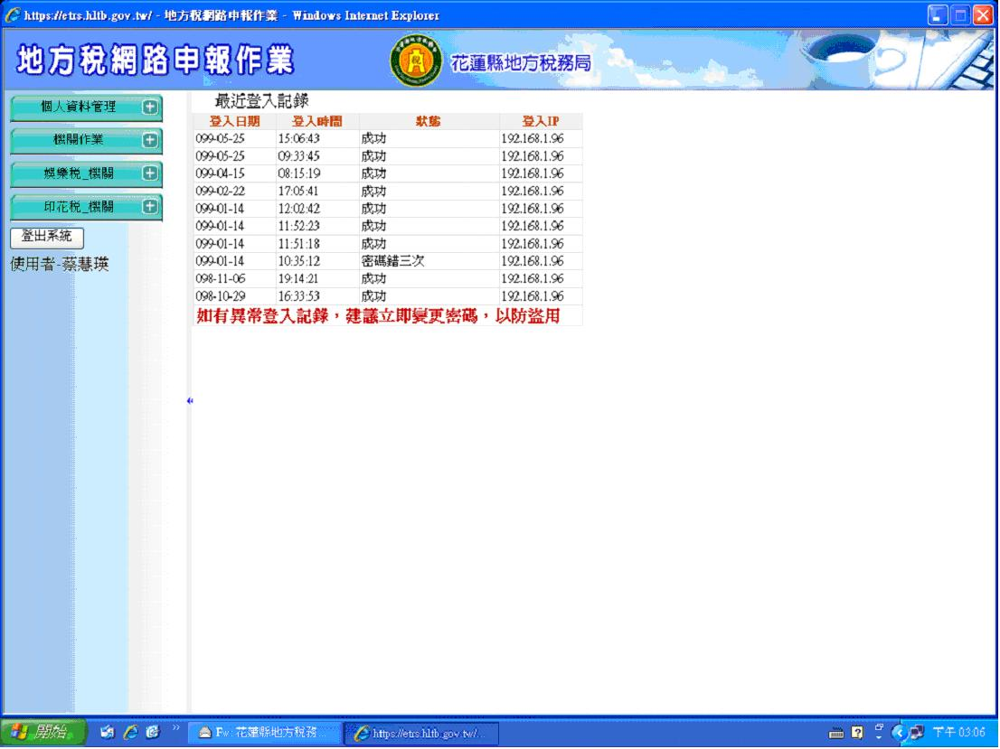
貳. 模擬資料庫系統檔案毀損：
一. 切斷防火牆，以防止民眾於演練期間連入地方稅網路申報系統，致使資料誤登於演練之資料庫。
（一） 登入外網防火牆系統，關閉防火牆規則 web -> DMZ:https，以防止民眾於災變期間連入地方稅網路申報系統。
二. 關閉網路申報系統內外網之中介主機，以防止中介主機於演練期間交換異常之檔案資料。
三. 關閉網路申報系統資料庫主機，模擬資料庫主機毀損。
四. 於 15:05 資訊科接獲土增稅服務區回報，無法登入地方稅網路申報系統。
五. 資訊科嘗試登入地方稅網路申報系統，發現系統無法連接資料庫主機。
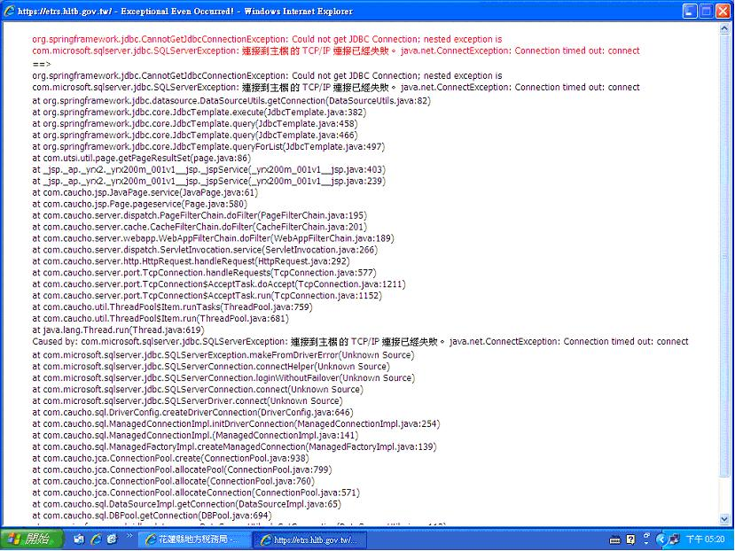
六. 通報資料庫管理員，經查為資料庫主機毀損，無法使用。
參. 資料庫復原：
一. 啟動另一台新主機，其 IP 設為網路申報資料庫主機之 IP。
二. 建置 MS SQLServer 於新資料庫主機上。
三. 登入資料庫主機。
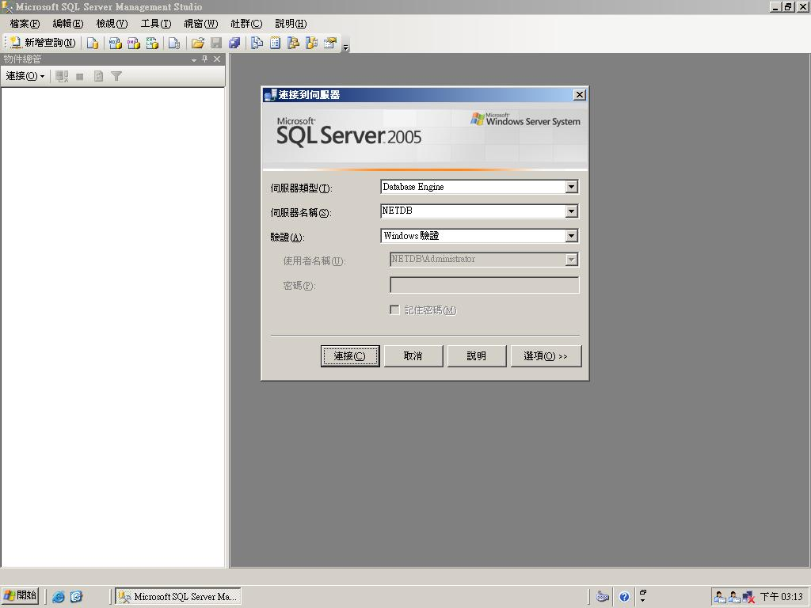
四. 檢視尚未復原之資料庫狀態。
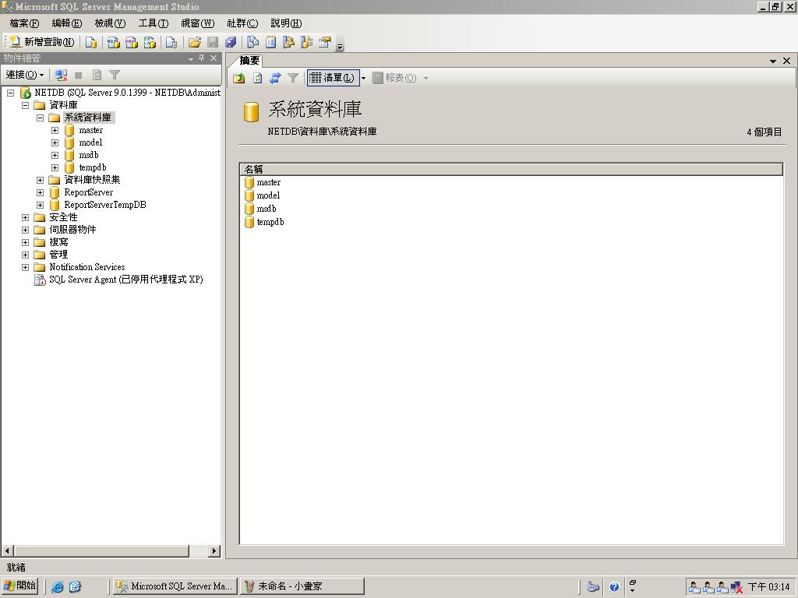
五. 登入 Acronis 備援系統。
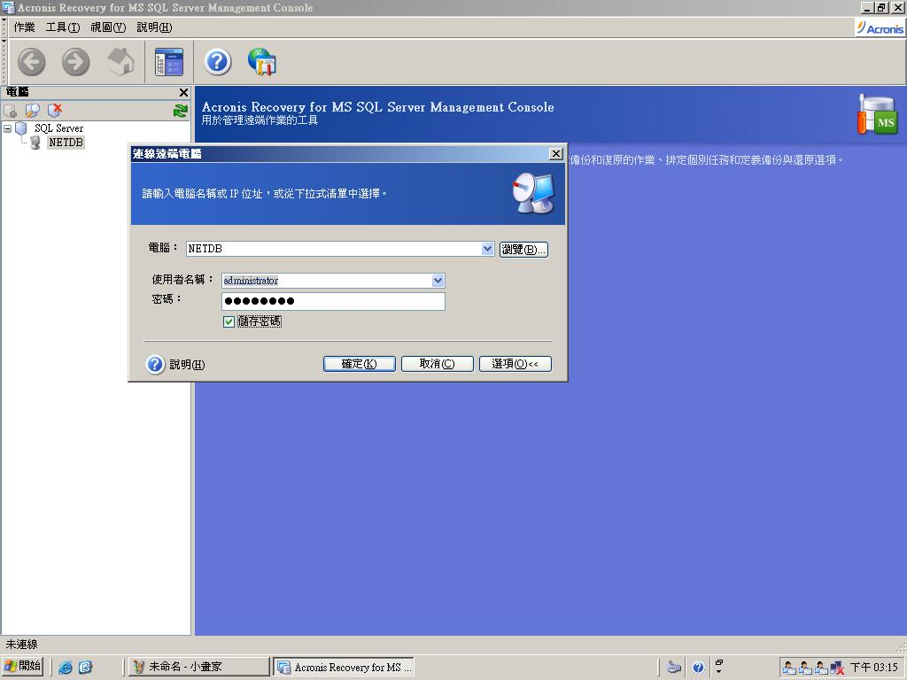
六. 選擇進行「還原」作業。
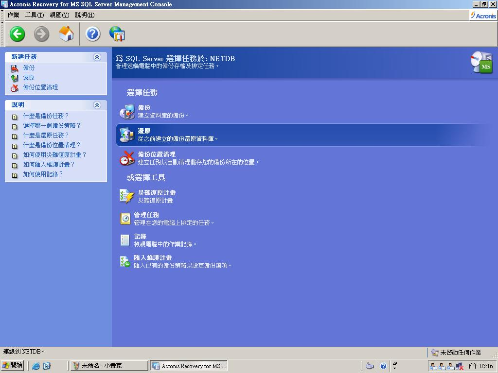
七. 選擇「立即」執行還原作業。
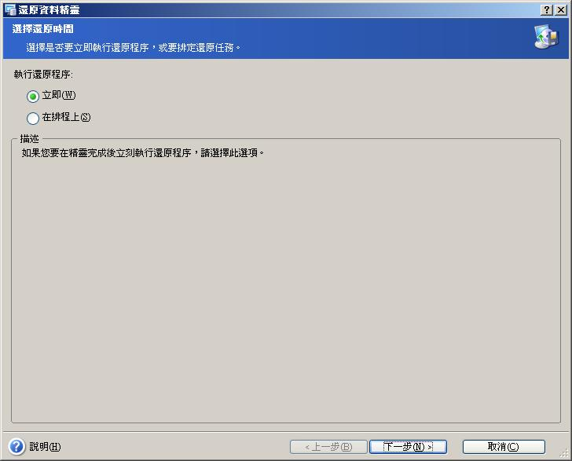
八. 選擇還原點為「還原到最近備份的時間」。
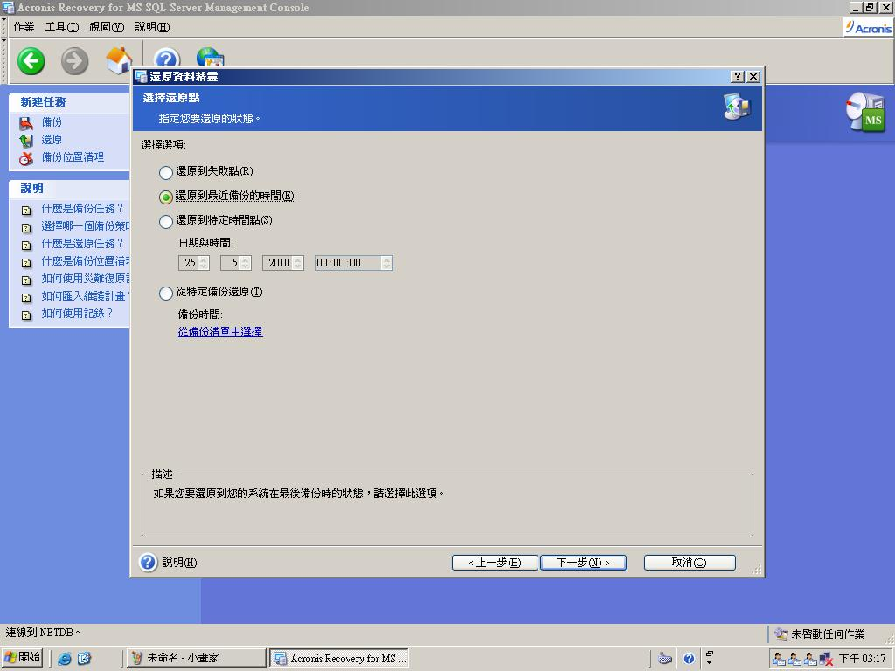
九. 選擇備份檔位置。
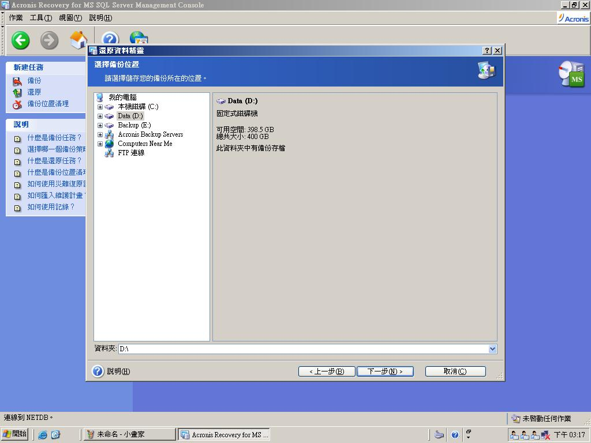
十. 選擇還原選項。
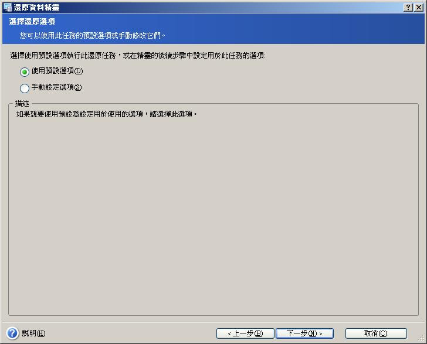
十一. 開始執行資料庫還原。
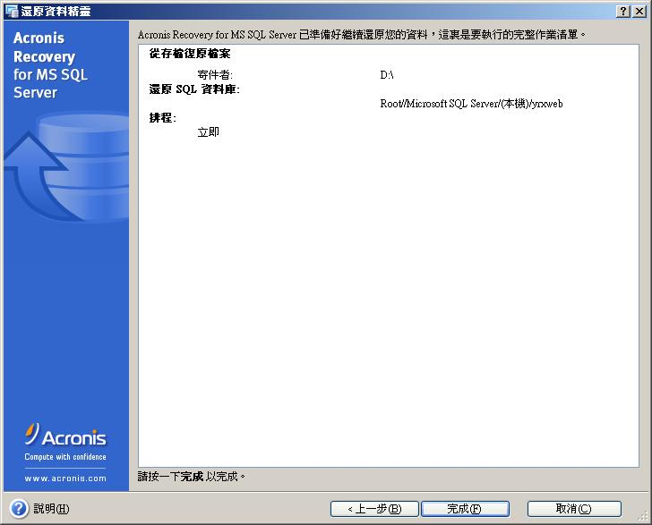
十二. 選擇還原內容。
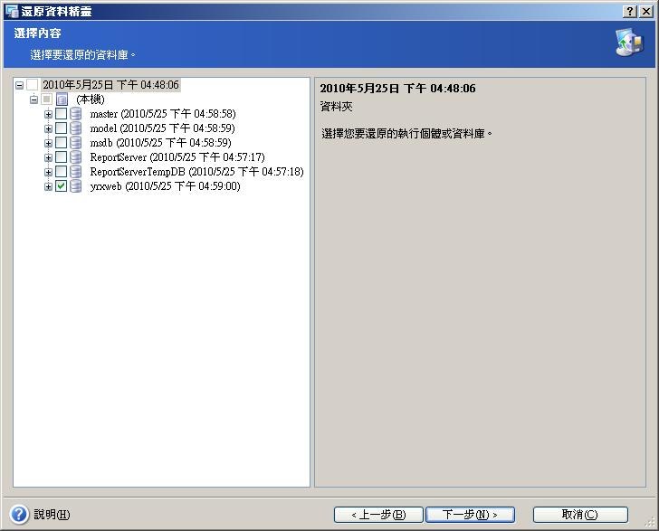
十三. 監控排定任務。
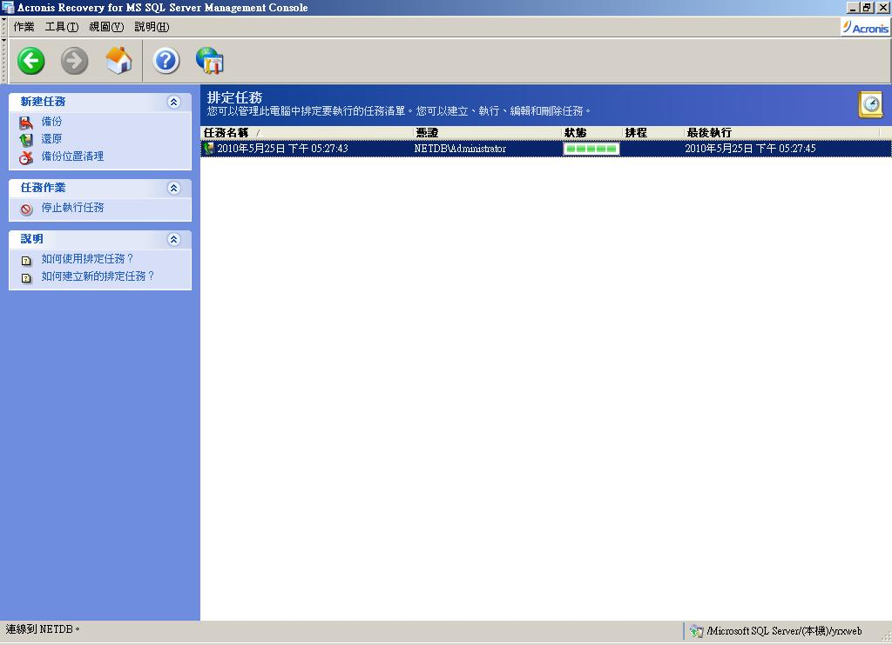
十四. 查看復原之 yrxweb 資料庫。
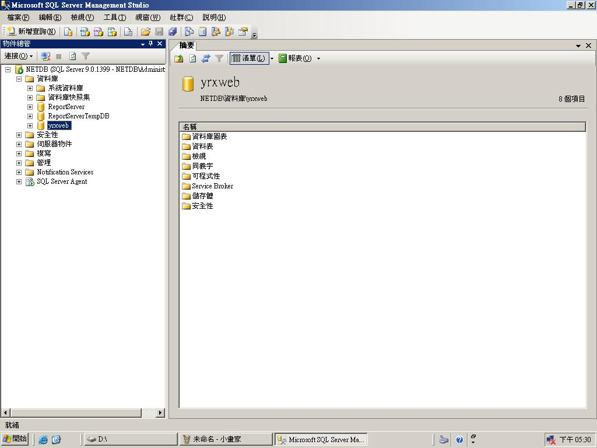
十五. 建立資料庫帳號 eltweb，且賦予存取 yrxweb 之權限。
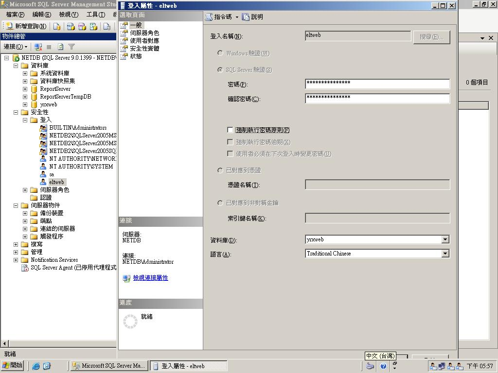
肆. 檢核驗證：
一. 開啟地方稅網申報系統，進行後續檢核驗證作業，並進行資料驗證作業，並於 17:58 登入畫面後，證明網路申報資料庫已復原完成。
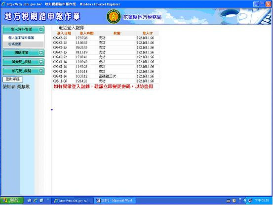
二. 關閉演練網路申報系統資料庫主機。
三. 開啟網路申報系統資料庫主機。
四. 開啟網路申報系統內外網中介主機。
五. 開啟防火牆，重新啟動地方稅網路申報系統。
六. 災變演練結束。